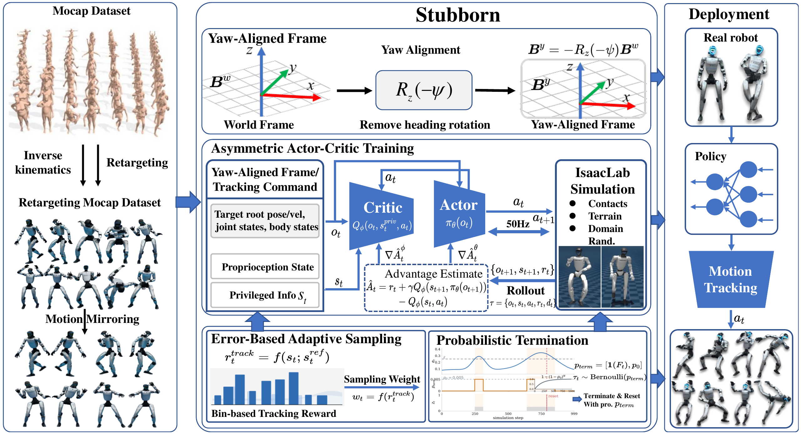

Abstract
Recent reinforcement learning approaches have shown great promise in improving humanoid motion tracking performance and achieving fall recovery under disturbances. However, most existing works treat motion tracking and fall recovery as different tasks and require multi-stage training with specialized recovery rewards and/or separate recovery policies. Moreover, existing reinforcement learning-based methods often terminate training episodes immediately after severe tracking failures, limiting recovery-oriented exploration in unstable or fallen states. To address the above issues, we propose Stubborn, a streamlined and unified reinforcement learning framework to achieve robust humanoid motion tracking and fall recovery. Specifically, Stubborn uses an asymmetric Actor-Critic architecture and consists of three major components. First, a yaw-aligned tracking representation is adopted to reduce sensitivity to global drift and heading disturbances while preserving gravity-related balance information. Second, we introduce a Bernoulli-based probabilistic termination mechanism that enables the policy to encourage exploration of fall-recovery behaviors under varying failure modes. Third, we propose a probabilistic termination and tracking-error-driven strategy that dynamically reshapes the sampling distribution based on tracking performance, increasing the training efficiency for difficult motion segments and unstable states. Extensive comparisons with SOTA methods and ablation studies show that Stubborn achieved competitive performance, and the proposed probabilistic termination mechanism and adaptive sampling strategy contributed to the performance and robustness gains. For real-world demonstrations, please refer to https://aislab-sustech.github.io/Stubborn/.
Method

Overview: Motion-capture data are first retargeted into reference motions. The policy is then trained with a yaw-aligned representation, an asymmetric actor--critic architecture, tracking-error-based adaptive sampling, and probabilistic termination. The learned policy is finally deployed on the real robot for highly dynamic motion tracking and recovery from unstable states.
Quantitative Results

For $\Delta \text{acc}$, RoMTrack achieves a score of $17.09$, which is lower than HoloMotion, Any2Track, and From-scratch RL, and is close to BFM-Zero. Although BFM-Zero achieves a slightly lower $\Delta \text{acc}$ value, its MPBPE, MPJPE, and MPJVE are substantially higher than those of RoMTrack. Considering these metrics together, RoMTrack achieves relatively low tracking errors on the complete LAFAN1 dataset while maintaining stable and smooth dynamic motion performance.

Ablation results of the probabilistic termination mechanism. Under a strong external perturbation of 5 m/s, the recovery success rate and the average number of recovery steps of Ours and w/o PT are compared under recovery thresholds of 0.15 m and 0.25 m. The box plot on the right summarizes the distribution of the final-stage results. Ours achieves higher recovery success rates and requires fewer recovery steps under both recovery thresholds.